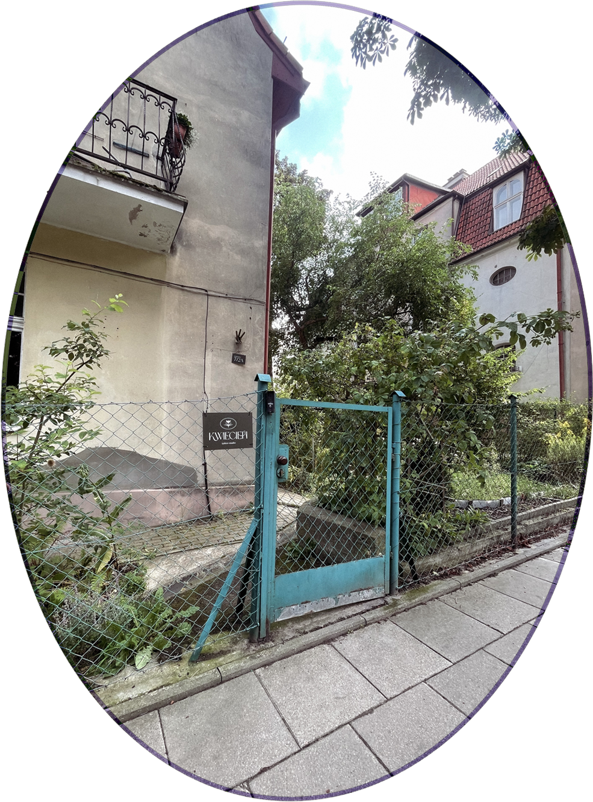
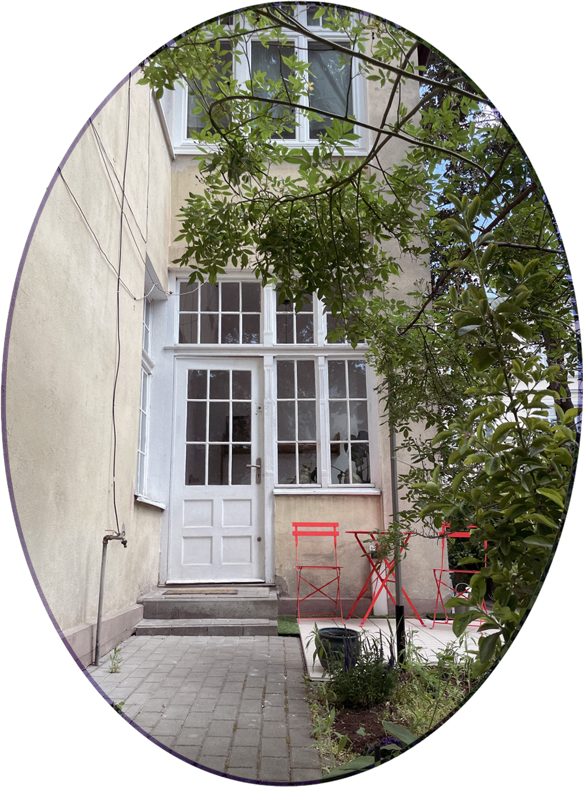

Hej!
Dziękujemy za zarezerwowanie sesji tatuażu w naszym studiu. Będzie nam przemiło gościć Cię u nas. Przeczytaj proszę plik, który przygotowałyśmy. Znajdziesz tu garść informacji, które przydadzą Ci się podczas Twojej wizyty.
Do zobaczenia,
kwietniowa ekipa
kwietniowa ekipa
REGULAMIN
- Dokonując wstępnej rezerwacji terminu zobowiązany_a jesteś do wpłacenia opłaty rezerwacyjnej w wysokości ustalonej z osobą tatuującą. Na wpłatę czekamy 4 dni. Zadatek jest bezzwrotny, ale jest możliwość przeniesienia go jednokrotnie na inny termin minimum 4 dni przed pierwotnie ustaloną datą. Brak stawienia się w umówionym terminie jest równoznaczne z utratą zadatku. Zadatek jest częścią ceny końcowej tatuażu. Pamiętaj, że dokonanie rezerwacji jest równoznaczne z akceptacją naszego regulaminu.
- Jako Studio mamy prawo do zmiany zarezerwowanego prze Ciebie terminu. W przypadku braku akceptacji przez Ciebie nowego terminu, zwrócimy Ci zadatek.
- Ceny wykonania zabiegu tatuażu ustalane są indywidualnie. Opłata minimalna to 300 zł. Każdy projekt wyceniany jest indywidualnie, a cena uzależniona jest od wielkości, miejsca wykonania i stopnia skomplikowania tatuażu.
- Projekt jest do wglądu w dniu sesji. Wtedy jest również czas na ewentualne poprawki i dopasowanie do anatomii ciała. W przypadku większych, bardziej skomplikowanych tatuaży proponujemy Ci konsultację przed umówionym terminem, jednak nie jest ona obowiązkowa. Przed przystąpieniem do zabiegu musisz wypełnić ankietę dotyczącą Twojego stanu zdrowia, a także obowiązkowo zapoznać się z ewentualnymi konsekwencjami pozabiegowymi, a także procedurą pielęgnacji tatuażu.
- Pamiętaj, że tatuaż jest wykonywany na skórze, która jako materiał nośny jest materiałem trudnym. Ze względu na cechy osobnicze Twojej skóry takie jak wiek, wiotkość, typ, przebyte lub niewykryte choroby lub alergie, a także miejsce wykonana zabiegu, jego finalny efekt może odbiegać od wzoru, który zdecydowałeś się wykonać. Kluczowa jest również odpowiednia pielęgnacja miejsca poddanego zabiegowi po jego wykonaniu, w szczególności w początkowym procesie gojenia rany. Zobowiązujesz się do stosowania zasad pielęgnacji, o których poinformuje Cię tatuator. Brak odpowiedniej pielęgnacji po zabiegu, znacznie wpływa na sposób gojenia skóry i finalny efekt zabiegu.
- Do zabiegów Studio wykorzystuje się sterylne narzędzia i produkty. Produkty jednorazowe, po użyciu podlegają utylizacji zgodnie z odpowiednimi normami o odpadach niebezpiecznych. Narzędzia wielokrotnego użytku po zabiegu poddawane są procesowi dezynfekcji i sterylizacji zgodnie z instrukcją ich użytkowania. Powierzchnie wewnątrz Studio są dezynfekowane odpowiednimi środkami do dezynfekcji powierzchni. Produkty przeznaczone do wykonania zabiegu, w tym w szczególności barwniki, spełniają normy i atesty mające do nich zastosowanie.
- Poddając się zabiegowi nie możesz być pod wpływem alkoholu, narkotyków lub innych środków odurzających. W przypadku powzięcia przez tatuatora wątpliwości co do Twojego stanu, tatuator może odmówić wykonania zabiegu. W takim przypadku Studio zachowuje zadatek bez możliwości żądania przez Ciebie jego zwrotu.
- Podczas wykonywania zabiegu współpracuj z tatuatorem i przestrzegaj zasad sanitarnych, o których zostaniesz przez niego indywidualnie pouczony, w szczególności nie dotykaj sprzętu służącego do tatuowania lub innych produktów. Ze względu na komfort innych klientów i tatuatorów zachowuj się w sposób powszechnie uznany za kulturalny. W przypadku braku zachowania przez Ciebie tych zasad, tatuator może odstąpić od zabiegu i odmówić jego dalszego wykonania.
- Zabieg może zostać przerwany w przypadku pogorszenia się Twojego samopoczucia lub niewłaściwej reakcji Twojego organizmu na zabieg.
- Tatuator może zmienić umówiony termin zabiegu, jeśli uzna, że wykonanie zabiegu w danym terminie jest niewskazane ze względu na Twój zły stan zdrowia, w tym w szczególności stan i kondycję skóry (np. świeża opalenizna, wysypka, rany w miejscu tatuowanym).
- Nie ponosimy odpowiedzialności za reakcje Twojego organizmu na użyte produkty, w tym w szczególności barwniki, a także za nieprzestrzeganie przez Ciebie zasad pielęgnacji pozabiegowych.
- Tatuaże wykonujemy tylko osobom, które ukończyły 18 lat.
- Jeśli będziesz miał jakiekolwiek wątpliwości co do procesu gojenia się tatuażu lub jego pielęgnacji, niezwłocznie się z nami skontaktuj.
- W studiu obowiązuje bezwzględny zakaz palenia wyrobów tytoniowych, w tym również papierosów elektronicznych, spożywania alkoholu, jakichkolwiek środków odurzających, a także obecności zwierząt. Ze względu na zapewnienie higienicznych warunków pracy, obowiązuje również zakaz spożywania posiłków poza miejscami do tego wyznaczonymi. Ze względów bezpieczeństwa, nie przyprowadzaj ze sobą dzieci.
- Celem promocji naszych prac, zastrzegamy sobie prawa autorskie do wykonanych w Studio tatuaży (w tym również ich projektów) i ich zdjęć. Decydując się na wykonanie u nas zabiegu na powyższe wyrażasz zgodę. Wykonanie tatuażu w innym salonie na bazie projektu wykonanego u nas w Studio bez uprzedniej, pisemnej zgody tatuatora, stanowić będzie naruszenie praw autorskich i narazi Cię na konsekwencje prawne.
- Wszelkie reklamacje należy zgłaszać do osoby, która wykonała tatuaż lub do studia przez e-mail kwiecień.ttt.studio@gmail.com. Prosimy o zawarcie opisu co według Ciebie jest nie tak oraz załączenie zdjęcia.
JAK TRAFIĆ DO STUDIA?
Studio znajduje się w Gdańsku, w dzielnicy Wrzeszcz.
Adres to Kossaka 7/2a.
Wejście jest bezpośrednio z ulicy, po prawej stronie kamienicy. Przy furtce znajduje się domofon z jednym przyciskiem, po przejściu przez futkę idziemy po kilku stopniach w górę (wyższy parter) i voila- jesteśmy na miejscu.


AUTOBUS
Przystanek Sobótki 01 – 3 min, 250m
TRAMWAJ
Przystanek Jaśkowa Dolina 01 – 8min, 600m
SKM/POCIĄG
Przystanek Gdańsk- Wrzeszcz- 12min, 1000m
SAMOCHÓD
Pod studiem znajdują się płatne miejsca parkingowe (wzdłuż ulicy). Nieopodal znajduje się też centrum handlowe Manhattan, gdzie jest płatny parking podziemny.
JAK SIĘ PRZYGOTOWAĆ DO TATUAŻU?
- Przeczytać uważnie regulamin, wysłany przez osobę tatuującą.
- Na tatuaż przychodzimy trzeźwi i nie pod wpływem substancji psychoaktywnych typu narkotyki.
- Nie bierzemy leków przeciwbólowych i nie smarujemy się kremami znieczulającymi bez wcześniejszej konsultacji z osobą tatuującą.
- W studiu obowiązuje zmiana obuwia. Mamy klapki, które dezynfekujemy po każdej osobie, ale jeśli nie czujesz się z tym komfortowo, możesz przynieść swoje obuwie na zmianę.
- Jeśli potrzebujesz się odświeżyć np. po pracy lub podróży daj znać gdy przyjdziesz, mamy w studiu prysznic i ręczniki.
- Ubierz się wygodnie, najlepiej w coś ciemnego, czego nie będzie szkoda, gdy się zaplami tuszem. Jeśli tatuujesz plecy dobrym pomysłem jest koszula, którą można założyć tył na przód. Jeśli tatuujesz nogi dla swojego komfortu możesz wziąć ze sobą szorty do przebrania.
- Jeśli chcesz zamów wcześniej krem do pielęgnacji tatuażu. Możesz również kupić go u nas w studiu, jeśli wolisz.
- Jeśli chcesz możesz samodzielnie ogolić tatuowane miejsce (rano w dniu sesji lub wieczór przed sesją).
- Przed sesją postaraj się wyspać i zjedz śniadanie.
- Zabierz ze sobą coś słodkiego do jedzenia (batonik, czekolada, cola itp.). Jeśli planujesz sesję całodzienną pomyśl o obiedzie. Tatuowanie jest wysiłkiem dla organizmu i warto jest zadbać o poziom cukru we krwi.
- Na sesje przychodzimy bez osób towarzyszących. Jeśli bardzo musisz kogoś zabrać to tylko na czas przygotowania projektu i odbicia kalki, jednak później wolimy, aby osoba towarzysząca opuściła studio.
- Nie planuj żadnych aktywności po tatuażu. Czasem sesja się przedłuża, więc lepiej nie mieć żadnych ważdych zobowiązać tego samego dnia. Możesz czuć się również zmęczony_a i osłabiony_a.
- Płatność preferowana: gotówka, ewentualnie BLIK.
JAK DBAĆ O TATUAŻ?
Jeśli tatuaż zabezpieczony jest second skinem:
- Po max 48h delikatnie i powoli odklej folię, cały czas trzymając ją pod wodą.
- Umyj tatuaż szarym mydłem lub płynem do higieny intymnej.
- Osusz delikatnie tatuaż za pomocą ręcznika papierowego.
- Posmaruj tatuaż cienką warstwą kremu do gojenia tatuaży.
- Myj i smaruj około 3-4 razy dziennie, przez 3-4 tygodnie.
Ważne: jeśli zauważysz zaczerwienienie przy krawędziach second-skina od razu zdejmij folie.
Jeśli tatuaż zabezpieczony jest folią:
- Zdejmij folię przed snem/po paru godzinach
- Umyj tatuaż szarym mydłem lub płynem do higieny intymnej.
- Osusz delikatnie tatuaż za pomocą ręcznika papierowego.
- Posmaruj tatuaż cienką warstwą kremu do gojenia tatuaży.
- Jeśli tatuaż zawiera dużo czerni lub czujesz, że nadal widać ślady osocza/tuszu/krwi ponownie zabezpiecz tatuaż folią (czystą!) na parę godzin/na noc.
- Myj i smaruj około 3-4 razy dziennie, przez 3-4 tygodnie.
Jeśli tatuaż zabezpieczony jest pieluchą:
- Zdejmij pieluchę rano/po ok.12 godzinach
- Umyj tatuaż szarym mydłem lub płynem do higieny intymnej.
- Osusz delikatnie tatuaż za pomocą ręcznika papierowego.
- Posmaruj tatuaż cienką warstwą kremu do gojenia tatuaży.
- Myj i smaruj około 3-4 razy dziennie, przez 3-4 tygodnie.
Czego nie można?
- Absolutny zakaz saun, basenów, kąpieli w zbiornikach wodnych, solarium do całkowitego zagojenia (3-4tygodnie)
- Umiarkowany zakaz sportu, bądź rozsądna_y, odpuść sobie treningi na min. tydzień, a jeśli tatuaż jest większych rozmiarów lub zawiera dużo czerni- na dłużej, do 3-4 tygodni.
- Nie używaj octaniseptu, tibioticu, alantaniu ani innych rzeczy, nieprzeznaczonych do gojenia tatuaży.
- Nie drap, nie skub, nie odrywaj strupków.
- Nie dotykaj tatuażu brudnymi rękoma, zachowaj ostrożność przy kontaktach ze zwierzętami.
- Pamiętaj, że tatuaż nie lubi słońca. Podczas gojenia staraj się osłaniać tatuaż przewiewną odzieżą, a po zagojeniu używaj kremów z filtrem (najlepiej 50+).
- Jeśli nadal masz jakieś wątpliwości- nie bój się zapytać.